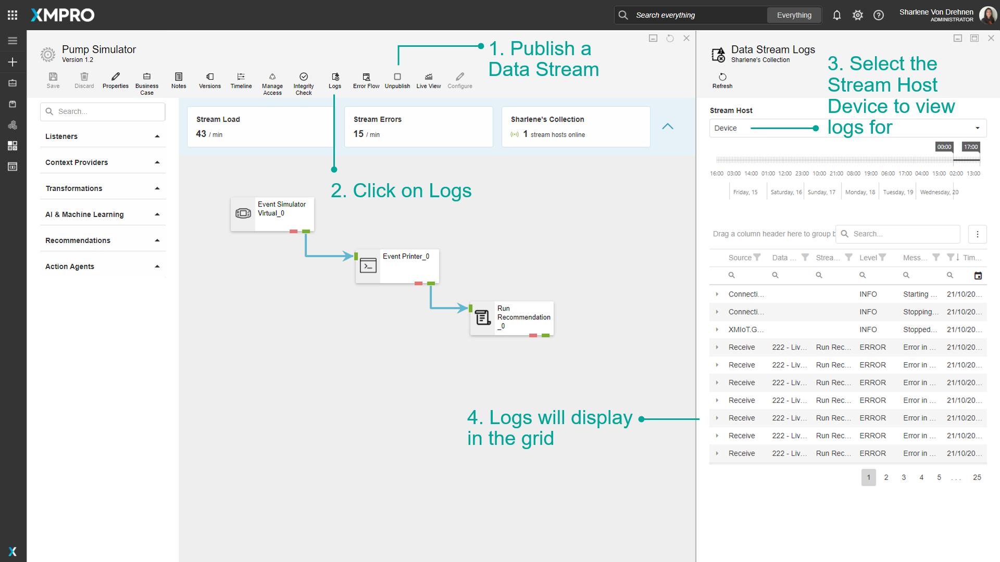
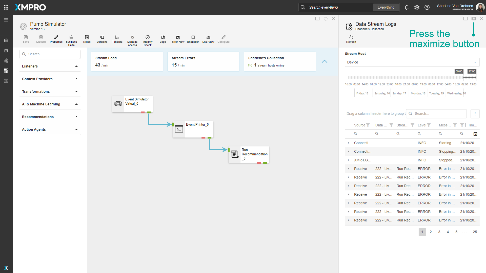
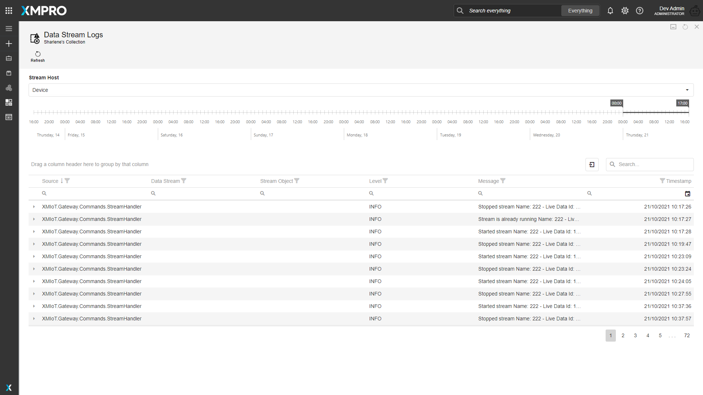
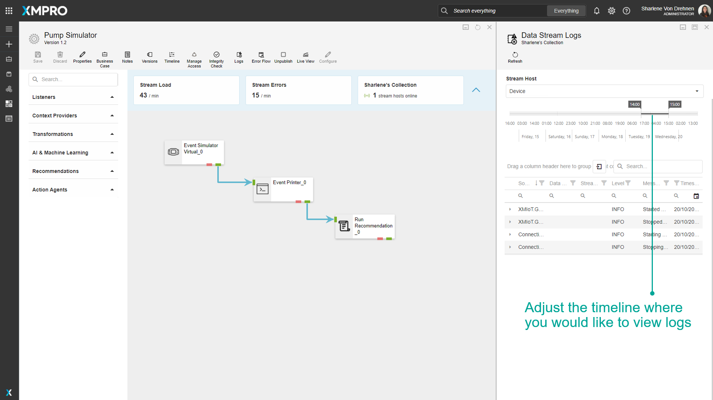
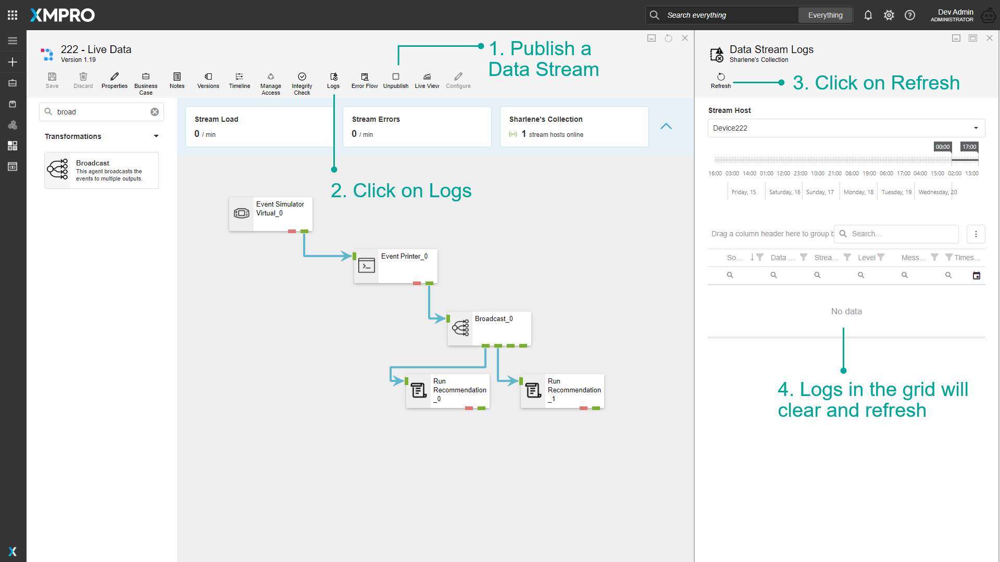
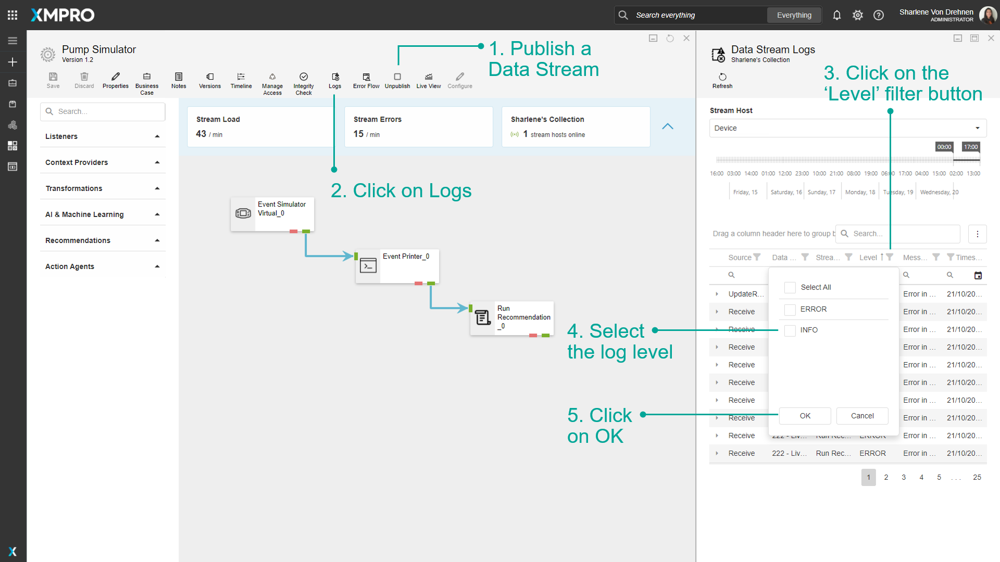
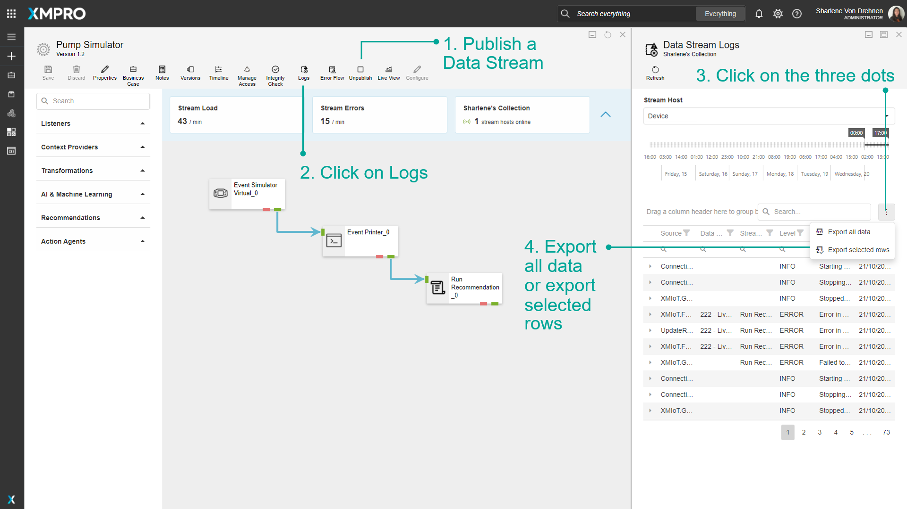

Check Data Stream Logs
A Stream Host is an application that can either be installed as a Windows Service or as a Console Application. Stream Hosts enable Data Streams to run, and you can check any status updates, messages, or errors from the Stream Host directly from the Data Stream you are running.
Note
It is recommended that you read the article listed below to improve your understanding of Stream Hosts and Data Streams.
Stream Host logs can be checked by going to the 'Collection' page of Data Stream Designer and viewing the logs there. However, you can also view Logs that are specific to a Data Stream directly from the Data Stream canvas.
Note
To find out more about viewing Stream Host logs, visit the How to Manage Stream Hosts article.
View Data Stream Logs
To view Data Stream logs from the canvas, follow the steps below:
- Publish a Data Stream.
- Click on Logs.
- Select the Stream Host Device to view logs for.
- Logs will display in the grid.

You can also maximize the grid to view the data more clearly.


To view logs within a specific time range, adjust the timeline slider above the grid.

Refresh Data Stream Logs
To refresh Stream Host logs, follow the steps below:
- Publish a Data Stream.
- Click on Logs.
- Click on refresh.
Logs in the grid will clear and refresh.

Filter Data Stream Logs
To filter Data Stream logs, follow the steps below:
- Publish a Data Stream
- Click on Logs.
- Click on the 'Level' filter button.
- Select the log level.
- Click on OK.

Export Data Stream Logs
To export Data Stream logs, follow the steps below:
- Publish a Data Stream
- Click on Logs.
- Click on the three dots.
- Export all data or export selected rows.

Last modified: May 28, 2025